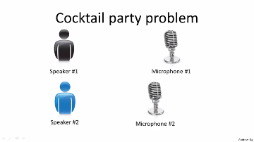

So, you've been to cocktail parties before, right? Well, you can imagine there's a party, room full of people, all sitting around, all talking at the same time and there are all these overlapping voices because everyone is talking at the same time, and it is almost hard to hear the person in front of you. So maybe at a cocktail party with two people, two people talking at the same time, and it's a somewhat small cocktail party. And we're going to put two microphones in the room so there are microphones, and because these microphones are at two different distances from the speakers, each microphone records a different combination of these two speaker voices. Maybe speaker one is a little louder in microphone one and maybe speaker two is a little bit louder on microphone 2 because the 2 microphones are at different positions relative to the 2 speakers, but each microphone would cause an overlapping combination of both speakers' voices. So here's an actual recording of two speakers recorded by a researcher. Let me play for you the first, what the first microphone sounds like. One (uno), two (dos), three (tres), four (cuatro), five (cinco), six (seis), seven (siete), eight (ocho), nine (nueve), ten (y diez). All right, maybe not the most interesting cocktail party, there's two people counting from one to ten in two languages but you know. What you just heard was the first microphone recording, here's the second recording. Uno (one), dos (two), tres (three), cuatro (four), cinco (five), seis (six), siete (seven), ocho (eight), nueve (nine) y diez (ten). So we can do, is take these two microphone recorders and give them to an Unsupervised Learning algorithm called the cocktail party algorithm, and tell the algorithm - find structure in this data for you. And what the algorithm will do is listen to these audio recordings and say, you know it sounds like the two audio recordings are being added together or that have being summed together to produce these recordings that we had. Moreover, what the cocktail party algorithm will do is separate out these two audio sources that were being added or being summed together to form other recordings.
So you might look at an Unsupervised Learning algorithm like this and ask how complicated this is to implement this, right? It seems like in order to, you know, build this application, it seems like to do this audio processing you need to write a ton of code or maybe link into like a bunch of synthesizer Java libraries that process audio, seems like a really complicated program, to do this audio, separating out audio and so on. It turns out the algorithm, to do what you just heard, that can be done with one line of code - shown right here.